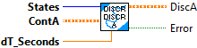
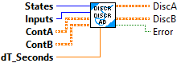
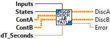
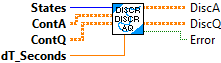
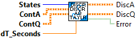
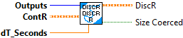

Discretizes the given continuous A matrix.
Inputs:
- States -- Num representing the number of states.
- contA -- Continuous system matrix.
- dtSeconds -- Discretization timestep.
Outputs:
- discA -- the discrete matrix system.
- error -- If TRUE, an error occured.

Discretizes the given continuous A and B matrices.
Inputs:
- States -- Nat representing the states of the system.
- Inputs -- Nat representing the inputs to the system.
- contA -- Continuous system matrix.
- contB -- Continuous input matrix.
- dtSeconds -- Discretization timestep.
Outputs:
- discA -- Discretized A matrix
- discB -- Discretized B matrix
- error -- If TRUE, an error occured.

Discretizes the given continuous A and B matrices.
Rather than solving a (States + Inputs) x (States + Inputs) matrix exponential like in DiscretizeAB(), we take advantage of the structure of the block matrix of A and B.
1) The exponential of A*t, which is only N x N, is relatively cheap.
2) The upper-right quarter of the (States + Inputs) x (States + Inputs) matrix,
which we can approximate using a taylor series to several terms and still be
substantially cheaper than taking the big exponential.
Inputs:
- states -- the states of the system.
- contA -- Continuous system matrix.
- contB -- Continuous input matrix.
- dtseconds -- Discretization timestep.
Outputs:
- DiscA -- Discretized A matrix
- DiscB -- Discretized B matrix
- Error -- If TRUE, an error occured.

Discretizes the given continuous A and Q matrices.
Inputs:
- States -- the number of states.
- contA -- Continuous system matrix.
- contQ -- Continuous process noise covariance matrix.
- dtSeconds -- Discretization timestep.
Outputs:
- DiscA -- the discrete system matrix
- DiscQ -- process noise covariance matrix.
- error -- If TRUE, an error occured.

Discretizes the given continuous A and Q matrices.
Rather than solving a 2N x 2N matrix exponential like in DiscretizeQ() (which is expensive), we take advantage of the structure of the block matrix of A and Q.
The exponential of A*t, which is only N x N, is relatively cheap. 2) The upper-right quarter of the 2N x 2N matrix, which we can approximate using a taylor series to several terms and still be substantially cheaper than taking the big exponential.
Inputs:
- States -- the number of states.
- contA -- Continuous system matrix.
- contQ -- Continuous process noise covariance matrix.
- dtSeconds -- Discretization timestep.
Outputs:
- DiscA -- the discrete system matrix
- DiscQ -- process noise covariance matrix.
- error -- If TRUE, an error occured.

Returns a discretized version of the provided continuous measurement noise covariance matrix. Note that dt=0.0 divides R by zero.
Inputs:
- Outputs -- the number of outputs.
- R -- Continuous measurement noise covariance matrix.
- dtSeconds -- Discretization timestep.
Outputs:
- DiscR -- Discretized version of the provided continuous measurement noise covariance matrix.
- SizeCoerced -- If TRUE, an error occured.